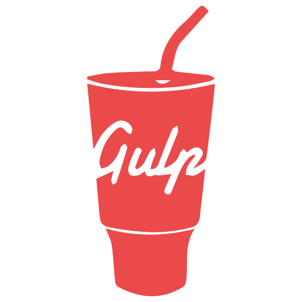

Shuya Portfolio
Web production & coexistence of
Photography & Music
About
自己紹介

私について
私のポートフォリオをご覧いただきありがとうございます。
眞野 秀哉と申します。
2020年9月よりWeb制作の勉強を始め、現在まで制作を続けています。
勉強を続けていくうちに奥深さに触れ、また制作各過程の苦労や責任なども色々知りました。
その上で自分が少しでも貢献できるように日々取り組んでいこうと思います。
趣味や人柄
作曲:過去にバンドをしていた名残で時々作曲をしています。複雑なもの(プログレ等)が好みです。また当サイトの曲はこのサイトのために作りました。
一眼レフ:夜景やイルミネーションを三脚で固定し撮影することが好きです。また当サイトの素材は一からほとんど撮りました。
将棋:大人になってから本格的に勉強をし、初段を取得しました。好きな戦法は三間飛車、右玉、4五桂速攻です。
人柄:優しいけど少し変わっていると言われることがあります。しかし、それは悪いことではなく新しい試みや物を作り出せる良いことなのではないかとプラスに考えています。
Study
学んできたこと
-

適切なタグの使用や機械構造に適したセマンティックなコードを心がけています
-

吉本式BEM設計を元にファイル設計を行い可読性や保守性を大事にしています。
-

動作を作るだけではなくリファクタリングや軽量化を必ず行うようにしています。
-

継続的な更新を念頭にコーディングや機能の追加(カスタム投稿)などを行なっています。
-

XDやPhotoshopを使用しターゲット層や目的を考慮し扱いやすいデザインを心がけています。
-

sassの効率化、実機確認、容量の削減、複数人での運用など行ってきました。